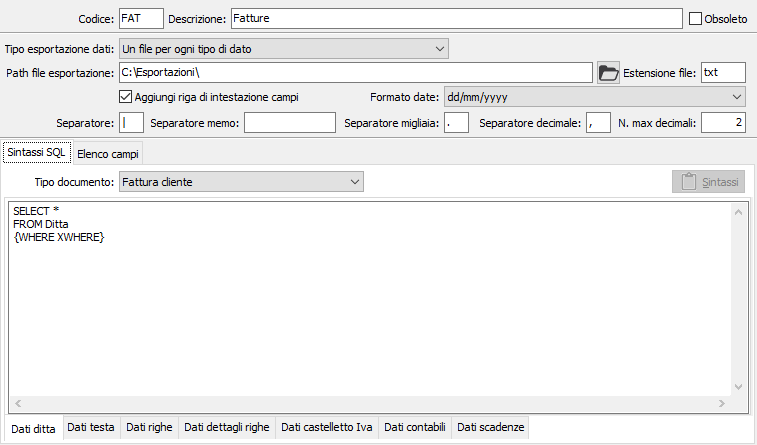
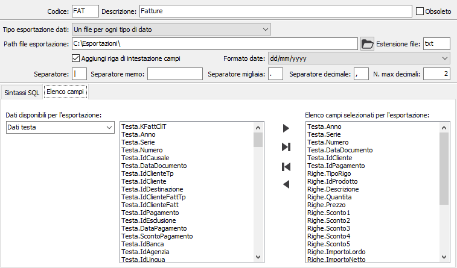

Modelli esportazione documenti
La tabella consente di configurare i modelli necessari all'esportazione di documenti presenti in OS1. Sono attivi i tasti Stampa ed Anteprima sulla toolbar principale per effettuare la stampa dei dati presenti. La procedura presuppone, da parte dell'utilizzatore che deve creare dei nuovi modelli di esportazione, una conoscenza sia del linguaggio SQL, sia della struttura delle tabelle, in quanto l'esportazione è basata su delle sintassi SQL che se non date precaricate, possono risultare un po' complesse da elaborare.

La sezione superiore della finestra presenta oltre il codice e la descrizione i dati generali inerenti l'esportazione quali: tipo esportazione, il percorso dove saranno salvati i files dell'esportazione, l'estensione che dovranno avere i file esportati, se all'interno dei files deve essere inserita una riga iniziale con i nomi dei campi esportati, il formato per l'esportazione dei campi di tipo data, il carattere di separazione che sarà inserito tra ogni campo, il carattere di separazione che identifica il ritorno a capo per le righe degli eventuali campi memo esportati (se non viene riportato nessun carattere il ritorno a capo sarà convertito in spazio), il carattere di separazione delle migliaia, il carattere di separazione delle cifre decimali ed il numero massimo dei decimali da utilizzare per l'esportazione dei campi numerici. L'esportazione può essere effettuata in due formati diversi in base al tipo esportazione dati: un unico file che all'interno conterrà dei blocchi distinti per numero documento, oppure tanti files separati uno per ogni tipo di dato esportabile.
La sezione inferiore della finestra contiene due pagine, una relativa alle sintassi SQL e l'altra relativa all'elenco dei campi esportabili; la pagina relativa alle sintassi contiene il tipo di documento che indica quale documento sarà oggetto dell'esportazione tra: Ddt, fatture, ordini e offerte clienti, vendite al dettaglio, ordini fornitori e richieste di offerta. Sono poi presenti altre pagine dove inserire le sintassi relative alle query di esportazione degli specifici dati, una pagina per ogni tipologia di dato esportato: dati ditta, dati di testa, dati delle righe, dati del dettaglio delle righe, dati castelletto Iva, dati contabili e scadenze; in ogni pagina sarà possibile utilizzare il pulsante Sintassi per accedere ad uno specifico editor di sintassi SQL che faciliterà l'inserimento in quanto riporta dei bottoni con le parole chiave più comuni, l'elenco delle tabelle e dei relativi campi.
Sarà necessario compilare solo le sezioni che interessano in relazione all'esportazione che deve essere eseguita: per esempio si potrebbe compilare solo i dati relativi alle teste, alle righe ed ai dati contabili, oppure le teste, le righe e le scadenze, oppure le teste e le scadenza e così via, tenendo ovviamente conto del tipo di esportazione che si è definito.

La pagina relativa all'elenco campi consente, una volta fissate tutte le sintassi SQL necessarie, di definire quali campi faranno parte del file o dei file di esportazione: sulla sinistra è presente una casella nella quale selezionare l'origine dei dati, una volta selezionata comparirà nella casella accanto l'elenco dei campi che la sintassi mette a disposizione e con in tasti Aggiungi, Aggiungi tutti, Togli, Togli tutti sarà possibile aggiornare l'elenco dei campi selezionati per l'esportazione.